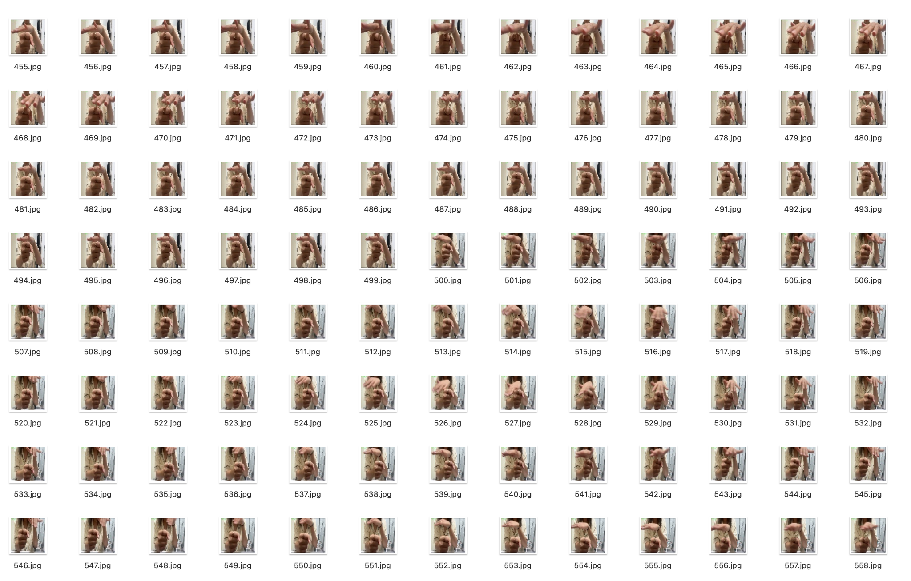
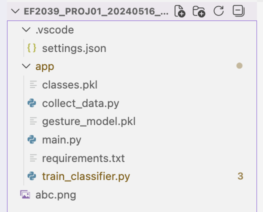

Real-time Hand Gesture → Text system using a webcam-based computer vision pipeline to support communication for deaf and hard-of-hearing users.
Online meetings and virtual classes are increasing, but deaf and hard-of-hearing individuals often face communication barriers.
SilentBridge addresses this gap by recognizing hand gestures from a webcam feed and converting them into readable text.
Pipeline: data collection → preprocessing → model training → real-time inference.
A lightweight SVM classifier enables fast inference and simple deployment.
The system consists of data collection scripts, a training script, and a real-time inference script using a webcam.
The model successfully recognizes common gestures in real time.
Performance may vary depending on lighting and hand orientation.
Real-time usability depends on both model accuracy and stable input conditions.
Future work includes increasing dataset diversity and testing CNN-based models.
SilentBridge demonstrates a complete AI pipeline and highlights the potential of gesture recognition for accessibility.
Integration with video conferencing platforms could further enhance its impact.
GitHub Repository:
https://github.com/chaewoneeeeeeeeeee/SilentBridge